| I l@ve RuBoard |
|
14.5 Submitting PyErrata ReportsThe next major functional area in PyErrata serves to implement user-controlled submission of new comment and errata reports. As before, let's begin by getting a handle on this component's user-interface model before inspecting its code. 14.5.1 User Interface: Submitting Comment ReportsAs we've seen, PyErrata supports two user functions: browsing the reports database and adding new reports to it. If you click the "General comment" link in the Submit section of the root page shown in Figure 14-2, you'll be presented with the comment submission page shown in Figure 14-16. Figure 14-16. Submit comments, input page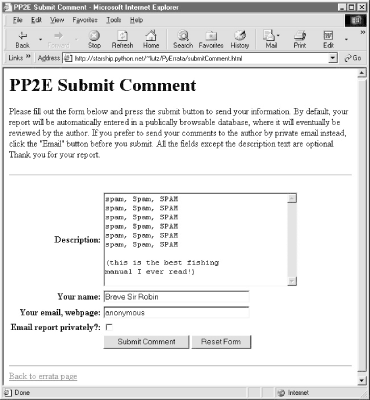This page initially comes up empty; the data we type into its form fields is submitted to a server-side script when we press the submit button at the bottom. If the system was able to store the data as a new database record, a confirmation like the one in Figure 14-17 is reflected back to the client. Figure 14-17. Submit comments, confirmation page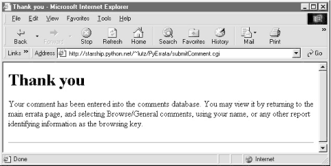All fields in submit forms are optional except one; if we leave the "Description" field empty and send the form, we get the error page shown in Figure 14-18 (generated during an errata submission). Comments and error reports without descriptions aren't incredibly useful, so we kick such requests out. All other report fields are stored empty if we send them empty (or missing altogether) to the submit scripts. Figure 14-18. Submit, missing field error page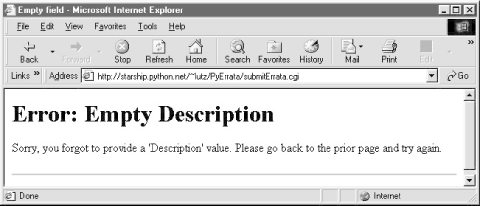Once we've submitted a comment, we can go back to the browse pages to view it in the database; Figure 14-19 shows the one we just added, accessed by key "Submitter name" and in "With index" display format mode. Figure 14-19. Submit comments, verifying result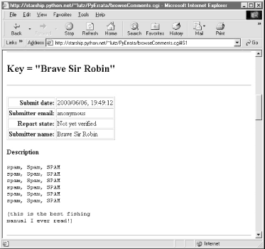14.5.2 User Interface: Submitting Errata ReportsHere again, the pages generated to submit errata reports are virtually identical to the ones we just saw for submitting comments, as comments and errata are treated the same within the system. Both are instances of generic database records with different sets of fields. But also as before, the top-level errata submission page differs, because there are many more fields that can be filled in; Figure 14-20 shows the top of this input page. Figure 14-20. Submit errata, input page (top)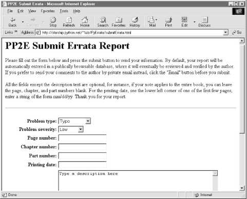There are lots of fields here, but only the description is required. The idea is that users will fill in as many fields as they like to describe the problem; all text fields default to an empty string if no value is typed into them. Figure 14-21 shows a report in action with most fields filled with relevant information. Figure 14-21. Submit errata, input page ( filled)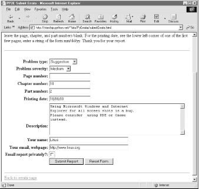When we press the submit button, we get a confirmation page as before (Figure 14-22), this time with text customized to thank us for an errata instead of a comment. Figure 14-22. Submit errata, confirmation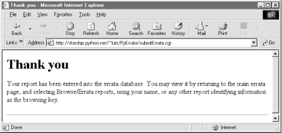As before, we can verify a submission with the browse pages immediately after it has been confirmed. Let's bring up an index list page for submission dates and click on the new entry at the bottom (Figure 14-23). Our report is fetched from the errata database and displayed in a new page (Figure 14-24). Note that the display doesn't include a "Page number" field: we left it blank on the submit form. PyErrata displays only nonempty record fields when formatting web pages. Because it treats all records generically, the same is true for comment reports; at its core, PyErrata is a very generic system that doesn't care about the meaning of data stored in records. Figure 14-23. Submit errata, verify result (index)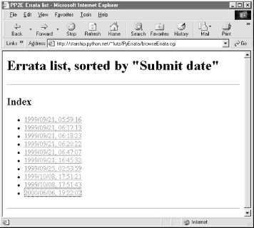Figure 14-24. Submit errata, verify result (record)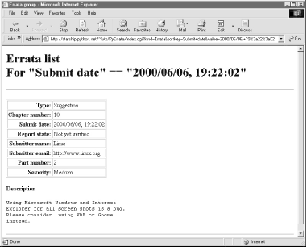Because not everyone wants to post to a database viewable by everyone in the world with a browser, PyErrata also allows both comments and errata to be sent by email instead of being automatically added to the database. If we click the "Email report privately" checkbox near the bottom of the submit pages before submission, the report's details are emailed to me (their fields show up as a message in my mailbox), and we get the reply in Figure 14-25. Figure 14-25. Submit errata, email mode confirmation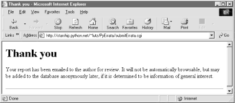Finally, if the directory or shelve file that represents the database does not grant write access to everyone (remember, CGI scripts run as user "nobody"), our scripts won't be able to store the new record. Python generates an exception, which is displayed in the client's browser because PyErrata is careful to route exception text to sys.stdout. Figure 14-26 shows an exception page I received before making the database directory in question writable with the shell command chmod 777 DbaseFiles/errataDB. Figure 14-26. Submit errata, exception (need chmod 777 dir)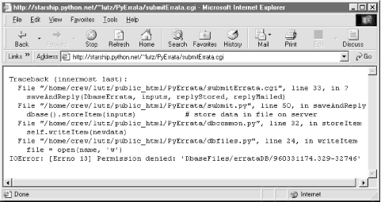14.5.3 Implementation: Submitting Comment ReportsNow that we've seen the external behavior of PyErrata submit operations, it's time to study their internal workings. Top-level report submission pages are defined by static HTML files. Example 14-8 shows the comment page's file. Example 14-8. PP2E\Internet\Cgi-Web\PyErrata\submitComment.html<html><body bgcolor="#FFFFFF">
<title>PP2E Submit Comment</title>
<h1>PP2E Submit Comment</h1>
<p>Please fill out the form below and press the submit button to
send your information. By default, your report will be automatically
entered in a publically browsable database, where it will eventually
be reviewed by the author. If you prefer to send your comments to the
author by private email instead, click the "Email" button before you
submit. All the fields except the description text are optional.
Thank you for your report.
</p>
<hr>
<form method=POST action="submitComment.cgi">
<table>
<tr>
<th align=right>Description:
<td><textarea name="Description" cols=40 rows=10>Type your comment here
</textarea>
<tr>
<th align=right>Your name:
<td><input type=text size=35 name="Submitter name">
<tr>
<th align=right>Your email, webpage:
<td><input type=text size=35 name="Submitter email">
<tr>
<th align=right>Email report privately?:
<td><input type=checkbox name="Submit mode" value="email">
<tr>
<th></th>
<td><input type=submit value="Submit Comment">
<input type=reset value="Reset Form">
</table>
</form>
<hr>
<A href="pyerrata.html">Back to errata page</A>
</body></html>
The CGI script that is invoked when this file's form is submitted, shown in Example 14-9, does the work of storing the form's input in the database and generating a reply page. Example 14-9. PP2E\Internet\Cgi-Web\PyErrata\submitComment.cgi#!/usr/bin/python
DEBUG=0
if DEBUG:
import sys
sys.stderr = sys.stdout
print "Content-type: text/html"; print
import traceback
try:
from dbswitch import DbaseComment # dbfiles or dbshelve
from submit import saveAndReply # reuse save logic
replyStored = """
Your comment has been entered into the comments database.
You may view it by returning to the main errata page, and
selecting Browse/General comments, using your name, or any
other report identifying information as the browsing key."""
replyMailed = """
Your comment has been emailed to the author for review.
It will not be automatically browsable, but may be added to
the database anonymously later, if it is determined to be
information of general use."""
inputs = {'Description':'', 'Submit mode':'',
'Submitter name':'', 'Submitter email':''}
saveAndReply(DbaseComment, inputs, replyStored, replyMailed)
except:
print "\n\n<PRE>"
traceback.print_exc( )
Don't look too hard for database or HTML-generation code here; it's all been factored out to the submit module, listed in a moment, so it can be reused for errata submissions too. Here, we simply pass it things that vary between comment and errata submits: database, expected input fields, and reply text. As before, the database interface object is fetched from the switch module to select the currently supported storage medium. Customized text for confirmation pages (replyStored, replyMailed) winds up in web pages and is allowed to vary per database. The inputs dictionary in this script provides default values for missing fields and defines the format of comment records in the database. In fact, this dictionary is stored in the database: within the submit module, input fields from the form or an explicit URL are merged in to the inputs dictionary created here, and the result is written to the database as a record. More specifically, the submit module steps through all keys in inputs and picks up values of those keys from the parsed form input object, if present. The result is that this script guarantees that records in the comments database will have all the fields listed in inputs, but no others. Because all submit requests invoke this script, this is true even if superfluous fields are passed in an explicit URL; only fields in inputs are stored in the database. Notice that almost all of this script is wrapped in a try statement with an empty except clause. This guarantees that every (uncaught) exception that can possibly happen while our script runs will return to this try and run its exception handler; here, it runs the standard traceback.print_exc call to print exception details to the web browser in unformatted (<PRE>) mode. 14.5.4 Implementation: Submitting Errata ReportsThe top-level errata submission page in Figures Figure 14-20 and Figure 14-21 is also rendered from a static HTML file on the server, listed in Example 14-10. There are more input fields here, but it's similar to comments. Example 14-10. PP2E\Internet\Cgi-Web\PyErrata\submitErrata.html<html><body bgcolor="#FFFFFF">
<title>PP2E Submit Errata</title>
<h1>PP2E Submit Errata Report</h1>
<p>Please fill out the form below and press the submit button to
send your information. By default, your report will be automatically
entered in a publically browsable database, where it will eventually
be reviewed and verified by the author. If you prefer to send your
comments to the author by private email instead, click the "Email"
button before you submit.
<p>All the fields except the description text are optional;
for instance, if your note applies to the entire book, you can leave
the page, chapter, and part numbers blank. For the printing date, see
the lower left corner of one of the first few pages; enter a string of
the form mm/dd/yy. Thank you for your report.
</p>
<hr>
<form method=POST action="submitErrata.cgi">
<table>
<tr>
<th align=right>Problem type:
<td><select name="Type">
<option>Typo
<option>Grammar
<option>Program bug
<option>Suggestion
<option>Other
</select>
<tr>
<th align=right>Problem severity:
<td><select name="Severity">
<option>Low
<option>Medium
<option>High
<option>Unknown
</select>
<tr>
<th align=right>Page number:
<td><input type=text name="Page number">
<tr>
<th align=right>Chapter number:
<td><input type=text name="Chapter number">
<tr>
<th align=right>Part number:
<td><input type=text name="Part number">
<tr>
<th align=right>Printing date:
<td><input type=text name="Printing date">
<tr>
<th align=right>Description:
<td><textarea name="Description" cols=60 rows=10>Type a description here
</textarea>
<tr>
<th align=right>Your name:
<td><input type=text size=40 name="Submitter name">
<tr>
<th align=right>Your email, webpage:
<td><input type=text size=40 name="Submitter email">
<tr>
<th align=right>Email report privately?:
<td><input type=checkbox name="Submit mode" value="email">
<tr>
<th></th>
<td><input type=submit value="Submit Report">
<input type=reset value="Reset Form">
</table>
</form>
<hr>
<A href="pyerrata.html">Back to errata page</A>
</body></html>
The script triggered by the form on this page, shown in Example 14-11, also looks remarkably similar to the submitComment script shown in Example 14-9. Because both scripts simply use factored-out logic in the submit module, all we need do here is pass in appropriately tailored confirmation pages text and expected input fields. As before, real CGI inputs are merged into the script's inputs dictionary to yield a database record; the stored record will contain exactly the fields listed here. Example 14-11. PP2E\Internet\Cgi-Web\PyErrata\submitErrata.cgi#!/usr/bin/python
DEBUG=0
if DEBUG:
import sys
sys.stderr = sys.stdout
print "Content-type: text/html"; print
import traceback
try:
from dbswitch import DbaseErrata # dbfiles or dbshelve
from submit import saveAndReply # reuse save logic
replyStored = """
Your report has been entered into the errata database.
You may view it by returning to the main errata page, and
selecting Browse/Errata reports, using your name, or any
other report identifying information as the browsing key."""
replyMailed = """
Your report has been emailed to the author for review.
It will not be automatically browsable, but may be added to
the database anonymously later, if it is determined to be
information of general interest."""
# 'Report state' and 'Submit date' are added when written
inputs = {'Type':'', 'Severity':'',
'Page number':'', 'Chapter number':'', 'Part number':'',
'Printing Date':'', 'Description':'', 'Submit mode':'',
'Submitter name':'', 'Submitter email':''}
saveAndReply(DbaseErrata, inputs, replyStored, replyMailed)
except:
print "\n\n<pre>"
traceback.print_exc( )
14.5.5 Common Submit Utility ModuleBoth comment and errata reports ultimately invoke functions in the module in Example 14-12 to store to the database and generate a reply page. Its primary goal is to merge real CGI inputs into the expected inputs dictionary and post the result to the database or email. We've already described the basic ideas behind this module's code, so we don't have much new to say here. Notice, though, that email-mode submissions (invoked when the submit page's email checkbox is checked) use an os.popen shell command call to send the report by email; messages arrive in my mailbox with one line per nonempty report field. This works on my Linux web server, but other mail schemes such as the smptlib module (discussed in Chapter 11) are more portable. Example 14-12. PP2E\Internet\Cgi-Web\PyErrata\submit.py#########################################################
# on submit request: store or mail data, send reply page;
# report data is stored in dictionaries on the database;
# we require a description field (and return a page with
# an error message if it's empty), even though the dbase
# mechanism could handle empty description fields--it
# makes no sense to submit a bug without a description;
#########################################################
import cgi, os, sys, string
mailto = 'lutz@rmi.net' # or lutz@starship.python.net
sys.stderr = sys.stdout # print errors to browser
print "Content-type: text/html\n"
thankyouHtml = """
<TITLE>Thank you</TITLE>
<H1>Thank you</H1>
<P>%s</P>
<HR>"""
errorHtml = """
<TITLE>Empty field</TITLE>
<H1>Error: Empty %s</H1>
<P>Sorry, you forgot to provide a '%s' value.
Please go back to the prior page and try again.</P>
<HR>"""
def sendMail(inputs): # email data to author
text = '' # or 'mailto:' form action
for key, val in inputs.items( ): # or smtplib.py or sendmail
if val != '':
text = text + ('%s = %s\n' % (key, val))
mailcmd = 'mail -s "PP2E Errata" %s' % mailto
os.popen(mailcmd, 'w').write(text)
def saveAndReply(dbase, inputs, replyStored, replyMailed):
form = cgi.FieldStorage( )
for key in form.keys( ):
if key in inputs.keys( ):
inputs[key] = form[key].value # pick out entered fields
required = ['Description']
for field in required:
if string.strip(inputs[field]) == '':
print errorHtml % (field, field) # send error page to browser
break
else:
if inputs['Submit mode'] == 'email':
sendMail(inputs) # email data direct to author
print thankyouHtml % replyMailed
else:
dbase( ).storeItem(inputs) # store data in file on server
print thankyouHtml % replyStored
This module makes use of one additional database interface to store record dictionaries: dbase( ).storeItem(inputs). However, we need to move on to the next section to fully understand the processing that this call implies.
|
| I l@ve RuBoard |
|